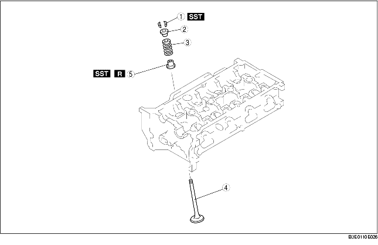
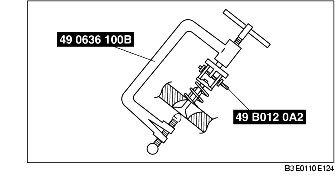
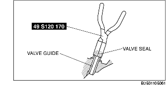

Cylinder head (II) disassembly
1. Disassemble in the order indicated in the table.

Valve Keeper Disassembly Note
1. Remove the valve keeper using the SSTs.

Valve Seal Disassembly Note
1. Remove the valve seal using the SST.
